Free to forkNo licence and no copyright claim: build this game under your own name, or lift one idea from it. Why?
Game overview
City Buster is Breakout turned upside down. Your paddle is an experimental warship hovering in orbit, your balls are orbs of energy, and the bricks are an entire side view of a city, its bunkers and the ground beneath them, all simulated pixel by pixel as falling sand that shatters, burns and melts.
You don't bounce the orbs off the paddle so much as slap them: release an orb into the sky, then swing the ship into it to send it down as hard as you like. Every hit on solid ground is a fiery blast. The aim is to dig down to the gang's machinery buried in the terrain and blow all of it up, while everything you break throws fire, lightning and shrapnel back up at you.
It mixes the brick breaker with the destructible scenes of falling-sand sandboxes like Powder Toy, set in a lawless frontier with the reckless spirit of Just Cause 2.
Target audience
Fans of Arkanoid-style brick breakers, falling-sand sandboxes and open-ended chaos like Just Cause, who want those pleasures in one tight arcade game.
They want loud, juggling, all-hands-busy destruction, without the brick breaker's old punishment of losing a life for one missed ball.
It's mouse only, plus one key for slow motion.
Game's purpose
Power and release: turning a whole fortified stage into molten slag from orbit.
Excitement and play: juggling a sky full of orbs while dodging what the ground throws back.
Variety: generated stages, gangs and planets, so every campaign looks and plays different.
It deliberately avoids draining calm and respect: a lost orb costs nothing, slow motion is always free, and every stage you've played is kept so you can replay it.
Core concept
Brick breakers are built on fixed walls of bricks and the fear of the ball slipping past you. One miss, one life.
Here the wall is a living simulation where every blast changes the terrain, missing an orb costs nothing because another is ready in two seconds, and the challenge moves to where it's fun: digging smart and dodging the retaliation.
Campaigns are generated without end, and each stage is saved for replay.
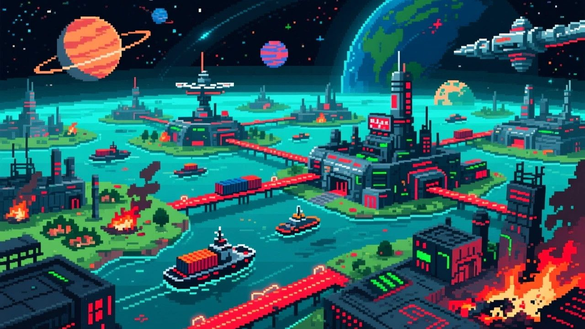
"Fifty star systems on the fringe of colonized space, and too many of them run by gangs."
Lore and story
The Helios Sector
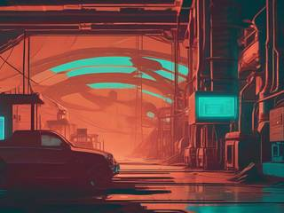
The Helios Sector is a region of about fifty star systems that people have only recently settled. Out on its lawless outskirts, some of the colonial leaders went corrupt and greedy and turned themselves into mafia bosses. Gangs, crooked mayors and plain thugs have taken over the mines, the factories and the power plants on planet after planet. There's no single tyrant to topple, only a whole sector of small ones.
The Paddle Ship
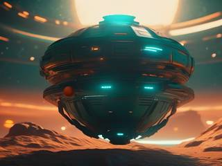
One of the groups they squeezed was a weapons research team, working on an odd experimental warship: a long, flat hull that launches orbs of energy and steers them by striking them. When the gangs came for their work, the researchers turned into a vigilante crew and took the ship to war.
Their backer is the strangest part of the story. An unhinged cult, hit just as hard by the gangs, pays for the whole operation, and it doesn't care about collateral damage as long as the evil gets put down.
The job right now
Pick a gang, fly to its planet and bust every site it runs, one stage at a time, from orbit. Then pick the next.
Controls and interface
The stage is a side view: sky on top, then the city, its structures and the layered ground beneath. The ship flies only in the top fifth of the screen, the orbital zone, and follows the mouse directly.
Mouse and one key
Move
Fly the paddle ship, tied directly to the pointer within the orbital zone
Left click
Release an orb, floating almost still, ready to be slapped
Right click
Hold to charge, release to set off an energy blast from every orb on the stage
Wheel
Choose the next orb type
Space
Slow motion on or off, with no limit
A new orb is ready two seconds after the last one was released. Because the ship is moved with the mouse itself, a slap can be a gentle tap or a full swipe, and that's exactly how hard the orb flies.
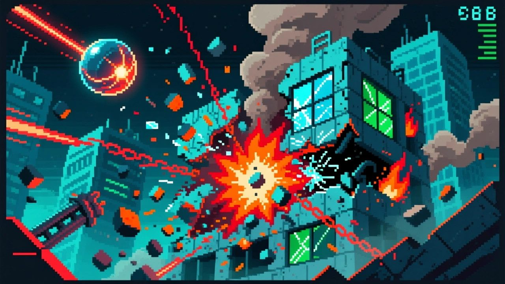
"An orb keeps the speed you slap it with. It never slows down on impact and isn't pulled by gravity."
Game layers
01 · Moment-to-moment
A sky full of orbs
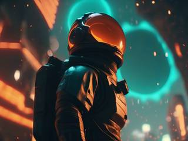
Release a few orbs, let them hang in the sky, then sweep through them one by one or all at once. They plunge into the city, blast out craters, set wood and grass burning, and come bouncing back up for another slap.
Meanwhile, every target you break throws a spray of fireballs, lightning bolts and metal shards up at the ship, and now and then a power-up that floats away into space unless you catch it. Three jobs at once: keep the orbs in play, dodge, and grab what's useful.
02 · Low metagame
One gang, nine stages
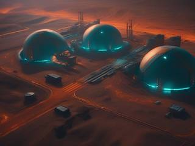
A campaign takes down one gang. It opens with a single briefing page: the gang's name, its leader, its colors, the planet and region it holds, and its list of one to five crimes.
Then come nine stages, each one of the gang's sites, where its people, wealth or machinery are. More crimes means busier stages: more to blow up, more retaliation to dodge, and more power-ups to catch and stack.
03 · High metagame
The fringe, and the log
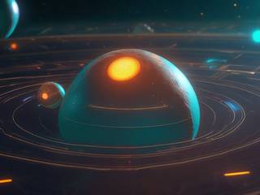
Between campaigns there's a rough star map of the fringe with three new gangs on it: an easy one with a single crime, a medium one with two or three, and a chaotic one with four or five. Take one on; other vigilante crews deal with the rest. When you finish or abandon a campaign, three new gangs appear. The sector never runs out of them.
Every campaign and every stage you play goes into the log, a record of the gangs you've brought down and where.
04 · Practical game flow
A stage at a time
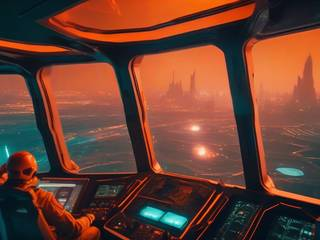
Pick a gang, read its briefing, and the first site is on screen. A stage is a short, intense burst of play, and the campaign waits after any of them.
Fancy just one more explosion at the end of the evening? Open the log and replay a favorite stage.
Game modes
Mode
What it's for
Campaign
The main game: choose a gang from the star map, bust its nine sites, choose the next. Endless.
Flashback
Replay any stage from the log, exactly as it was generated. Canonically the gang is already gone; you're just reliving a good day.
The fringeGang after gang, three new ones to choose from every time.
A campaignOne gang, its briefing and nine of its sites.
A stageOne generated site, done when every target in it is destroyed.
Features and mechanics
The heart of it
Every pixel reacts
When an orb hits solid pixels, it sets off a fiery blast with an outward force. Pixels near it either shatter, breaking loose and falling as debris that knocks into other pixels, or ignite, turning molten and passing their heat to their neighbors, which melt in turn until the heat thins out. Molten pixels slowly cool into inert, burnt slag.
Broken and burnt pixels still collide with each other, but orbs pass straight through them. So every blast clears a path, and an orb keeps biting deeper into the ground on every return trip.
Material
What it does
Sand
Light; blown away by force, melts into hot glass that cools to glass
Soil
A little sturdier; shreds away, or melts into lava
Stone, concrete
Hard solids; shatter into heavy loose aggregate, or melt into lava
Wood, grass
Shred to pulp, or catch fire; fire turns to smoke, wood to ash
Water
Thrown around by blasts, boils into steam that rises and fades
Glass, cable
Details of buildings; glass shatters to dust or melts, cable burns like wood
Lava, ash
What's left; lava spreads heat and cools to ash, which glints with embers
Bedrock
The floor of the stage, flat, jagged or rolling, and indestructible
The game is set on exoplanets, so each stage picks its own colors for natural and artificial materials: the soil can be a dusty cyan and the water purple.
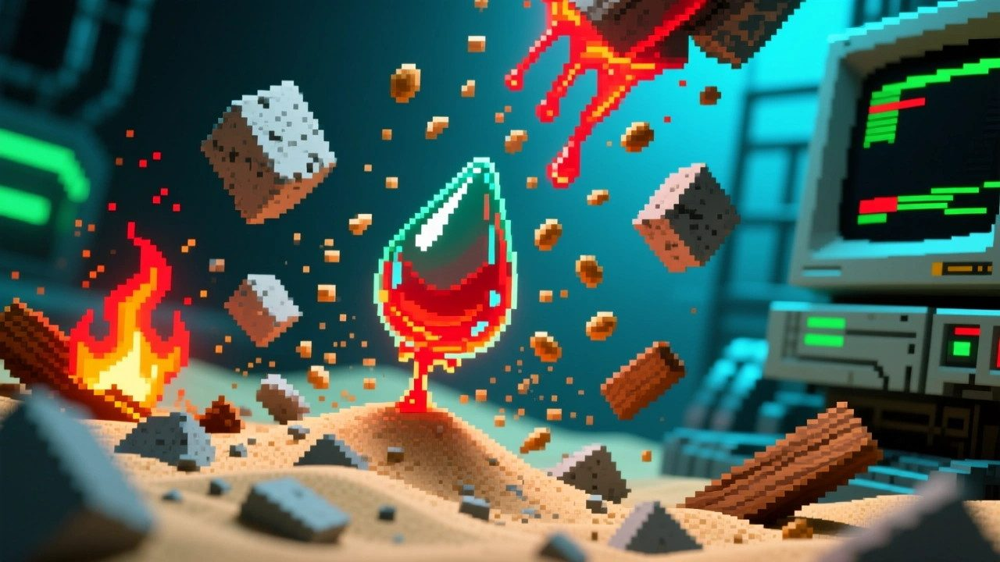
"Sand melts into glass, stone into lava, wood into fire and ash. Orbs pass straight through whatever's already broken."
The paddle
Slap, don't bounce
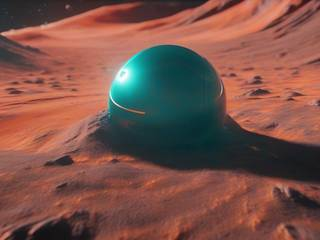
An orb is released with almost no speed and just hangs there. Whatever speed the ship gives it when they collide is the speed it flies at, constant, until it meets the ship again. Orbs ignore gravity, lose nothing on impact and pass through each other.
That lets you set up a whole constellation of orbs and fire them off in one sweep, or tap one gently to drop a careful blast exactly where it's needed. An orb that flies past the ship into space is simply gone, with no life lost. The next one is ready in two seconds.
Right click
The charge blast
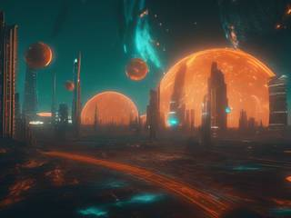
Hold the right button to charge, release to set off an energy blast from every orb on the stage at once, wherever they are, without destroying them. Every orb also speeds up by 10%.
Timing it well pays: any orb that bounced off the terrain in the last half second blasts with a 50% larger radius. After a short cooldown it's ready again, for as long as orbs remain on the stage.
The mouse wheel
Five kinds of orb
The ship can make five types of orb, picked with the wheel before release, a little like choosing a bird in Angry Birds:
Orb
How it plays
Normal
Medium size, medium blast. Reliable and easy to manage.
Triple
Three small orbs with half-size blasts each. A more even spread of destruction.
Accelerator
Starts slow and keeps speeding up to a top speed. Huge potential, hard to control.
Splitter
Starts big; after three terrain hits it splits into three medium orbs, and each of those later into two small ones.
Charge
Small, with a tiny blast. But a charge blast triples its speed and energizes it, so its next impact is a big blast, after which it keeps half the extra speed. Keep charging it without losing it and it grows absurdly powerful, and absurdly fast.
The goal
Targets that hit back
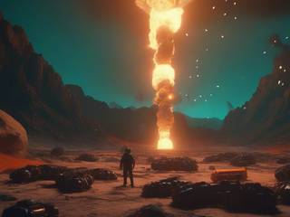
Each stage hides the gang's targets: fuel tanks, silos, barrels, cargo containers, crates, industrial machines, transformers, capacitor banks, giant batteries. They're solid objects, not pixels, embedded in the terrain on the surface, underground or hanging from balloons. Destroy them all to clear the stage, which usually means digging down to them blast by blast.
Every target that breaks sprays fireballs, lightning, metal shards and shrapnel up toward the sky, each taking one point off the ship's armor. The ship starts with ten and can be repaired up to fifty. If the armor runs out, the ship pulls back to orbit for repairs and returns to the same stage, which stays exactly as wrecked as you left it.
Catch them before they're gone
Power-ups that stack
Roughly one target in three releases a power-up, which floats up and off into space unless you catch it. Most last 30 to 60 seconds, depending on rarity, and many stack, so a well-caught streak builds into something ridiculous.
For the orbs
For the ship
Bigger blasts, +20% each
Triple or quintuple launch
More mass: debris flies harder
More heat, and set on fire
Piercer: burrows in, blasts after a delay
Superheated: an aura that heats whatever it passes
Magnetic catcher: hold orbs, relaunch at will
Gravity field: rising orbs curve back to the ship
Hypervelocity launcher
Stronger engines: fly lower, up to 80% of the screen
Wider paddle, up to double
Armor repair and a shield generator
Space bar
Slow motion, whenever you like
Slow motion is a toggle with no limit. When the sky is full of orbs, shrapnel and floating power-ups, slow it all down, line up the slap, thread the ship between two fireballs, catch the power-up, and speed back up.
It's how a game this busy stays fair to the hands playing it, and how a really good chain of blasts gets watched properly.
Built in layers
Generated stages
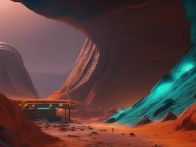
Every stage is built by a generator from a seed, in passes. The ground goes down in layers, wood, grass and water on top, then sand and soil, then stone, then bedrock:
TerrainLayered sand and solids
StructuresRectangles of concrete on and under the surface
HollowsSome carved into caves, tunnels, shafts and rooms
WaterSmall pools, here and there
DetailTrees, bushes, cables, glass, grass
CrewsLittle wax figures in the open spaces
TargetsThe gang's machinery, scattered last
The gang's crews are tiny wax figures, a couple of pixels wide, standing, sitting or lying about. They melt and burn like everything else. Each campaign can also bring a quirk to its stages, like different gravity or stronger explosions, so a gang's nine sites share a feel of their own.
A living history
The log of flashbacks
Every stage is generated from a seed and given a name drawn from it, and both are saved in the log along with the campaign it belonged to. The log is the record of your war on the fringe: every gang, every planet, every site.
Any entry can be replayed as a flashback, the exact same stage regenerated from its seed. The gang is still gone; you're only reliving a stage you liked, as many times as you like.
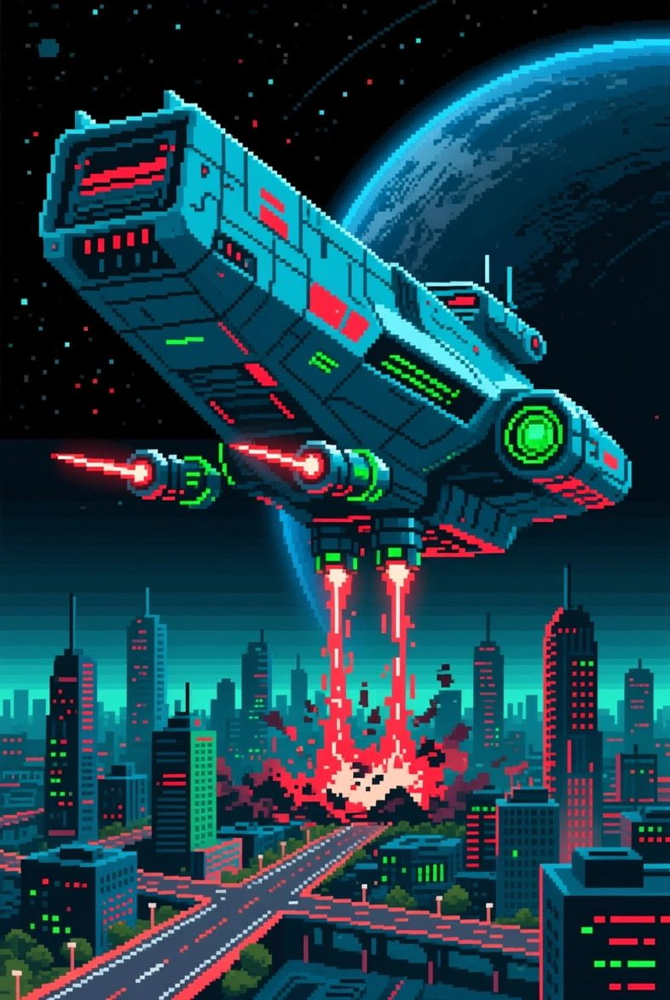
Target briefing
City Buster: Orbital Brick Breaker
Gang: three crimes, nine sites, one planet's worth of stolen mines and power plants. Their tanks, silos and batteries are buried deep, and they'll throw everything they have back at you.
You have a paddle in orbit and an endless supply of orbs. Slap them down. Dig them out. Melt the rest.